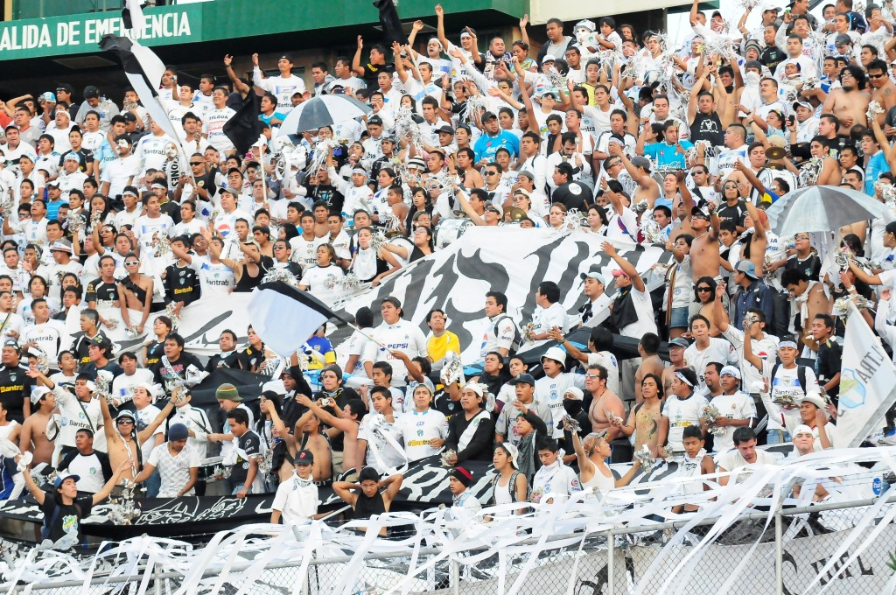
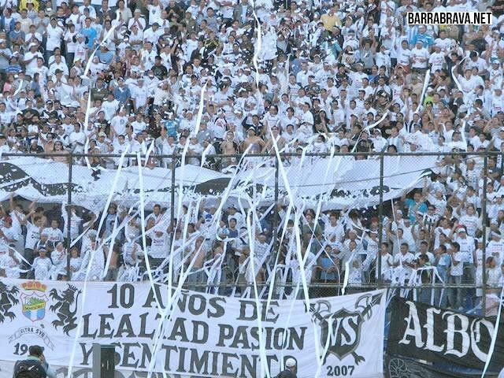

Afición:
La afición alba desde sus inicios ha estado compuesta por los diferentes estratos de la sociedad guatemalteca. En la década de los 80 empezó a tomar más auge el apoyo organizado, en ese momento por porras que se ubicaban en diferentes sectores del estadio que se hacían sentir con cánticos, papel picado, globos y mantas, marcando una pauta diferente de apoyo de las aficiones de ese entonces en el fútbol chapín.
Fue en esa época cuando popularmente se le imprimió el mote de la "Afición Millonaria" por los miles de fanáticos e hinchas con los que cuenta el club en todo el país. Actualmente la afición crema es la única de Guatemala que ha adoptado el tipo de aliento sudamericano en el que todos en el estadio cantan al unísono dando un ambiente único en las gradas.

A principios de los años 90, surgió oficialmente el primer grupo organizado de apoyo denominado Fuerza Crema, regularmente ubicado en la zona Preferencia del estadio, convirtiéndose en el más grande del país con más de 2500 integrantes. Fue hasta mediados del año 1996 que después de varias diferencias entre sus líderes, la Fuerza Crema se separó. Algunos exmiembros del antiguo grupo se cambiaron de sector en el estadio formando en ese mismo año la barra Vltra Svr (Ultra Sur), nombre que adoptó por su ubicación en la zona General Sur del inmueble. Este grupo es caracterizado por los cánticos que brinda al equipo durante todo el partido, además de recibimientos, banderazos y caminatas, algo que no se acostumbraba en el fútbol de Guatemala.
La barra cuenta con grandes mantas, banderas, paraguas, bombos con murgas, trompetas, redoblantes y un enorme bombo traído desde Chile para alentar al club. Cabe destacar que en sus inicios la barra llegó a albergar en partidos trascendentales a más de 3000 integrantes.